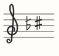
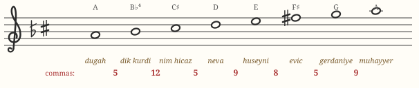
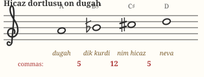
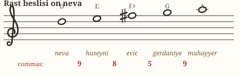
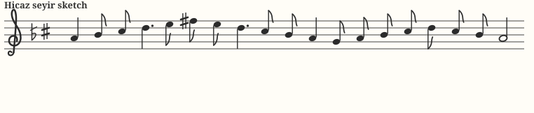

Chapter 09 · fifth makamMakam Hicaz
Named after the Hejaz region of Arabia, Hicaz is the makam everyone recognizes before they know its name: the surging augmented second in its first three notes is, for much of the world, the very sound of the Middle East. In Turkish hands it is passionate but refined — grief, longing, and celebration in one gesture.
Identity card
| Tonic (durak) | dügâh — written A |
|---|---|
| Dominant (güçlü) | nevâ — D, the 4th degree |
| Leading tone (yeden) | rast — G, a whole tone below |
| Construction | Hicaz dörtlü on dügâh + Rast beşli on nevâ |
| Seyir direction | ascending (çıkıcı) |
| Key signature |  dik kürdî (B −4) + nim hicaz (C +4) |
The scale

Look closely at the famous opening: it is not the piano's “A–B♭–C♯.” The second degree (dik kürdî) sits one comma higher than Western B♭, and the third (nim hicaz) one comma lower than Western C♯ — so the augmented second narrows from the piano's ≈13 commas (300 cents) to 12 (≈271 cents). The result sounds tighter, sweeter, less “snake-charmer” than its 12-tone caricature. Feel the three pitches:
The two genera


A dramatic bottom and a serene top: above the güçlü, Hicaz turns into pure Rast material (hear the warm eviç sixth). This contrast — turbulence below, light above — is the engine of Hicaz melody.
Seyir: how Hicaz moves
An ascending makam: state the tetrachord around the tonic — the augmented second immediately fixes the identity — cadence on the güçlü nevâ, explore the calm Rast territory above, then return, letting nim hicaz (C♯) lean back down through dik kürdî onto dügâh. Final cadences often touch the yeden rast below for grounding.

Repertoire to listen for
| Piece | What it is |
|---|---|
| “Ada Sahillerinde Bekliyorum” — İstanbul türküsü | Catalogued in Hicaz; the augmented second saturates its opening line. One of the most covered Turkish songs ever. |
| “Hicaz Mandıra” and other dance tunes | Fast 2/4 dance pieces named for the makam itself — Hicaz at a gallop. |
| Mevlid and night-time ezan | Süleyman Çelebi's Mevlid is traditionally recited largely in Hicaz-family makams, as is the night (yatsı) call to prayer in Turkey. |